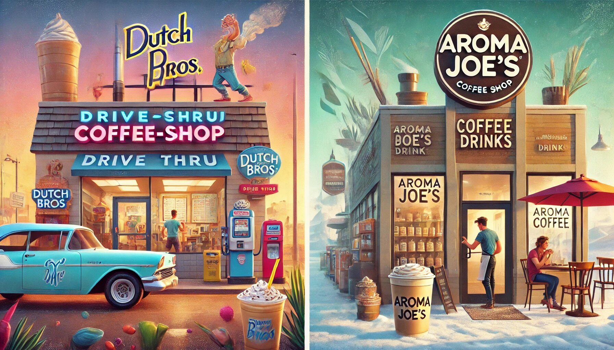

Dutch Bros vs. Aroma Joe's: A Coffee Showdown
If you're a coffee lover, you’ve likely heard of Dutch Bros and Aroma Joe’s. These two coffee chains have built strong fan bases and are known for their unique offerings, community vibes, delicious drinks, and reasonable Dutch Bros prices. While they both cater to caffeine enthusiasts, their styles, menus, and experiences differ significantly. Let’s dive into the details to understand what sets these two apart and why people rave about them.
The Origins
Dutch Bros Coffee: Founded in 1992 in Grants Pass, Oregon, Dutch Bros was started by two brothers, Dane and Travis Boersma, who left their family dairy business to pursue a passion for coffee. What started as a small pushcart has grown into a massive drive-thru coffee empire with locations scattered across the western United States. Dutch Bros is known for its vibrant energy, friendly "bro-istas," and strong focus on community involvement.
Aroma Joe's: Aroma Joe’s came onto the scene in 2000 in East Rochester, New Hampshire. Its four founders aimed to create a coffee brand that emphasized quality, community, and sustainability. Aroma Joe’s is particularly popular in New England and has grown steadily while maintaining a focus on providing handcrafted drinks and fostering a welcoming atmosphere.
Menu Offerings
Dutch Bros: Dutch Bros is renowned for its extensive and sometimes overwhelming menu. Their signature drinks lean heavily on the sweet and creative side, making them perfect for those who love indulgent coffee. Some of their popular offerings include:
- Annihilator: A creamy blend of chocolate macadamia nut syrup and espresso.
- Kicker: Irish cream and espresso that packs a punch.
- Rebel Energy Drinks: For non-coffee drinkers, this line of customizable energy drinks has gained a cult following.
- Frosts and Freezes: Think milkshake-style drinks, blended and sugary.
Customization is king at Dutch Bros. You can tweak drinks with different syrups, milk options, and toppings, ensuring every visit feels personal.
Aroma Joe's: Aroma Joe’s prides itself on its handcrafted beverages. While they offer the traditional coffee shop staples like lattes, cappuccinos, and iced coffee, their specialty drinks stand out:
- Rush Energy Drinks: Similar to Dutch Bros’ Rebel line, these are customizable energy drinks that come in various fruity and vibrant flavors.
- Frozen Joe’s: Their version of a blended frozen coffee, perfect for hot days.
- Espresso Bar Drinks: Options like macchiatos and Americanos are available for those who prefer a classic coffee experience.
- Signature Flavors: Aroma Joe’s highlights seasonal offerings and unique syrups, such as toasted marshmallow and salted caramel.
While Aroma Joe’s menu is less expansive than Dutch Bros’, it emphasizes quality over quantity, offering drinks that are consistently satisfying.
Dutch Bros Sizes
Dutch Bros keeps things simple yet satisfying when it comes to drink sizes. They offer three standard options: Small (16 oz), Medium (24 oz), and Large (32 oz). Dutch bros sizes are generous, with even the smallest option providing a hearty dose of caffeine or sweetness. This sizing approach ensures that customers get good value for their money, whether they're ordering a classic Americano or one of the chain’s over-the-top specialty drinks. The large size is especially popular among those who need a serious pick-me-up, making it perfect for long workdays or road trips.
Ambience and Vibes
Dutch Bros: Step into a Dutch Bros drive-thru (or walk-up window), and you’ll be greeted with a contagious energy that’s hard to ignore. Employees are known for being upbeat and conversational, sometimes to the point where you might think they had an extra shot of espresso that morning. The company focuses on creating a fun and friendly experience, with employees often striking up genuine conversations with customers.
The chain’s overall vibe is youthful, vibrant, and a bit quirky. Whether it’s their loud music or the playful names of their drinks, Dutch Bros feels like a coffee shop that never takes itself too seriously.
Aroma Joe's: Aroma Joe’s exudes a more relaxed, New England charm. While they also have drive-thrus, the overall experience is less high-energy compared to Dutch Bros. The focus here is on creating a welcoming and low-pressure environment. The employees are friendly, but the vibe leans more towards efficient and personable rather than exuberant.
Aroma Joe’s fits perfectly into the laid-back lifestyle of its northeastern roots, making it ideal for customers who want great coffee without the extra fanfare.
Community Focus
Dutch Bros: Known for their philanthropic efforts, such as the annual Drink One for Dane day and the Dutch Bros Foundation.
Aroma Joe's: Emphasizes sustainability and local involvement, supporting causes like mental health awareness and veterans' services.
The Coffee Quality
Dutch Bros: If you like your coffee sweet and bold, Dutch Bros is your go-to. Their beans are roasted for a rich, robust flavor, but the focus often leans more on the syrups, flavors, and milk combinations. The result? Drinks that taste more like dessert than traditional coffee. This is perfect for people who prioritize fun, creative beverages over a pure coffee experience.
Aroma Joe's: Aroma Joe’s takes a more balanced approach to its coffee. They emphasize freshness, using 100% Arabica beans that are roasted to achieve a smooth and flavorful cup. While their specialty drinks can also be sweet and indulgent, they offer a stronger focus on coffee-forward beverages. Aroma Joe’s caters to those who want both quality and variety without going over the top.
Price Points
While we won’t dive into specific pricing, it’s worth noting that both chains are considered affordable. Dutch Bros tends to offer larger drink sizes and more elaborate creations, which might slightly influence the cost. Aroma Joe’s pricing is competitive, with an emphasis on value for money and quality ingredients.
Expansion and Availability
Dutch Bros: Primarily located in the western United States, with slow expansion eastward.
Aroma Joe's: Concentrated in New England, with steady growth in the surrounding states.
Loyalty Programs and Promotions
Dutch Bros: The Dutch Rewards app allows customers to earn points and redeem them for free drinks and deals.
Aroma Joe's: AJ’s Rewards program offers similar benefits, along with seasonal promotions and discounts.
Who Wins?
It depends on what you’re looking for:
- Dutch Bros: If you love vibrant energy, bold flavors, and a menu that feels like a playground for coffee lovers, Dutch Bros is the clear winner. Their unique drinks and friendly, high-energy staff make every visit feel like a treat.
- Aroma Joe's: If you prefer a laid-back atmosphere, high-quality coffee, and a brand that emphasizes sustainability and community, Aroma Joe’s might be your cup of joe (pun intended).
Ultimately, both chains have their strengths, and it’s hard to go wrong with either. Whether you’re grabbing a Rebel Energy Drink at Dutch Bros or sipping on a Frozen Joe’s from Aroma Joe’s, you’re in for a caffeine-filled adventure.
Final Sip
The Dutch Bros vs. Aroma Joe’s debate might not have a definitive answer, but one thing is certain: both chains have mastered the art of creating coffee experiences that resonate with their customers. So, the next time you’re craving a caffeine fix, why not give both a try and decide for yourself? After all, life’s too short for bad coffee—and neither Dutch Bros nor Aroma Joe’s falls into that category.